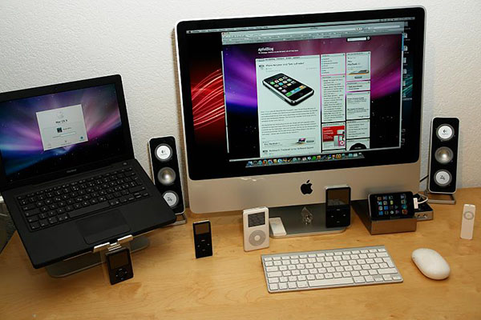
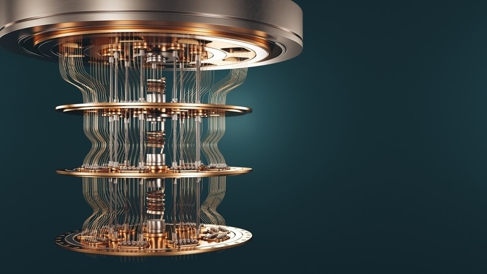

Ahora se presentaran mis generaciones favoritas, no me base en la importancia, solo en el gusto personal
La quinta generación de computadoras (desde los años 90 hasta la actualidad) representa un salto cualitativo en la historia de la tecnología, marcado por la convergencia de la inteligencia artificial (IA), el internet omnipresente y la computación ubicua. A diferencia de generaciones anteriores centradas en hardware, esta etapa se define por el software avanzado, el procesamiento paralelo y la interconexión global. Este ensayo profundiza en sus características clave, tecnologías emblemáticas y desafíos futuros.
Las computadoras cuánticas representan un paradigma radicalmente diferente a la computación clásica. Mientras las computadoras tradicionales usan bits binarios (0s y 1s), las cuánticas aprovechan los principios de la mecánica cuántica como la superposición y el entrelazamiento para procesar información de manera exponencialmente más rápida en ciertos problemas. Este ensayo explora su funcionamiento, avances actuales, aplicaciones y desafíos.
